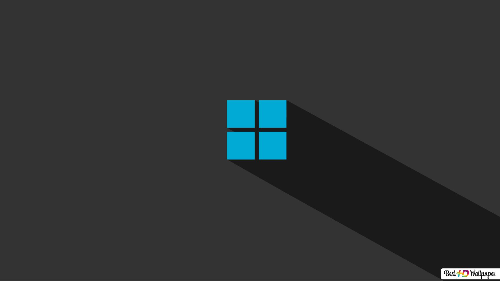

Dark Mode

Helps reduce eye strain, especially in low light conditions, by reducing the brightness of application windows and objects on the screen. Reduces the amount of blue light being displayed on the screen. Helps conserve battery power on laptops and mobile devices.